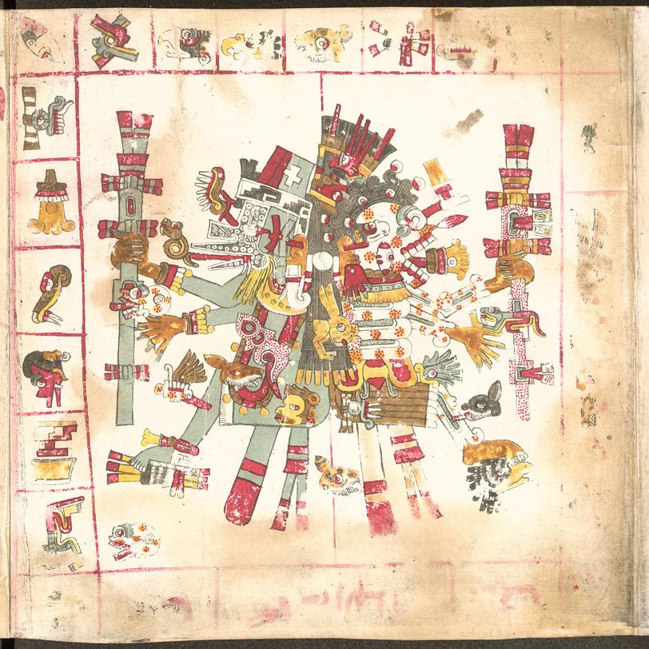
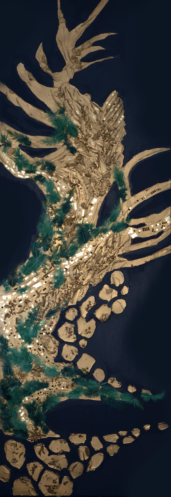
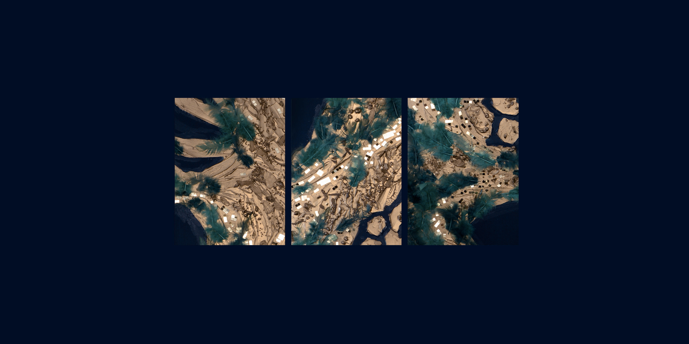

Quetzalcoatl // Serpent à plumes

Quetzalcoatl // Serpent à plumes
J’offre, j’offre du cacao en fleur ;
Puissé-je être envoyé à la Maison du Soleil.
Belle et très précieuse est l’enceinte de plumes de quetzal ;
Puissé-je connaître la Maison du Soleil, me rendre là-bas.
Personne ne peut capter
en son âme la belle fleur enivrante ;
je répands des fleurs de cacao,
leur parfum embaume l’eau de Huexotzinco.
— Chant nahua (Cantares mexicanos)
Puissé-je être envoyé à la Maison du Soleil.
Belle et très précieuse est l’enceinte de plumes de quetzal ;
Puissé-je connaître la Maison du Soleil, me rendre là-bas.
Personne ne peut capter
en son âme la belle fleur enivrante ;
je répands des fleurs de cacao,
leur parfum embaume l’eau de Huexotzinco.
— Chant nahua (Cantares mexicanos)
Natalia Stavrovskaja
été 2026
Cinquième Soleil
été 2026
Cinquième Soleil
2026

Natalia Stavrovskaja
Paris 2026
150 × 50 cm
Peinture Acrylique / Medium / Divers sur Toile
Paris 2026
150 × 50 cm
Peinture Acrylique / Medium / Divers sur Toile

Détail de texture
Quetzalcoatl // Serpent à plumes
Le centre est la cinquième direction de l'espace précolombien, symbolisant l'axe vertical qui transcende la croix cardinale horizontale.
Les Précolombiens représentaient dans les pyramides la cinquième direction de l'espace qui, par sa capacité ascendante, permet à la matière de se transcender et d'approcher le ciel, rompant ainsi l'horizontalité. Quetzalcoatl représente donc la conscience du centre, celle du cœur.
- Les Traditions de l'Amérique ancienne, F. Schwarz